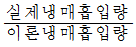
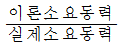
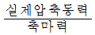
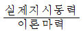
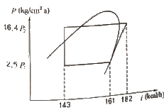
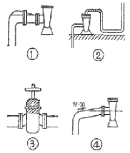
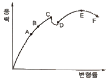
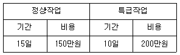

가스기능장 (2015-04-04 기출문제)
1과목: 임의 구분
1. 어느 이상기체가 압력 10kgf/cm2 에서 체적이 0.1m3 이었다. 등온과정을 통해 체적이 3배로 될 때 기체가 외부로부터 받은 열량은 약 몇 kcal인가?
- 35.7
- 30.9
- 25.7
- 10.9
(정답률: 58%)
2. 액화석유가스 집단공급사업자로부터 가스를 공급받는 수요자의 가스사용시설에 대한 안전점검의 항목이 아닌 것은?
- 배기통의 막힘 여부
- 가스계량기 출구에서의 마감조치 여부
- 연소기마다 퓨즈콕 등 안전장치 설치 여부
- 연소기의 입구압력을 측정하고 그 이상 유무
(정답률: 83%)

3. 에어졸 제조기준에 대한 설명으로 틀린 것은?
- 내용적이 100cm3 를 초과하는 용기는 그 용기제조자의 명칭 또는 기호가 표시되어 있어야 한다.
- 에어졸 충전용기 저장소는 인화성 물질과 8m 이상의 우회거리를 유지한다.
- 내용적이 30cm3 이상인 용기는 에어졸 제조에 재사용하지 아니한다.
- 40℃ 에서 용기안의 가스압력이 1.5배의 압력을 가할 때 파열되지 아니하여야 한다.
(정답률: 75%)
4. 황화수소의 저장탱크에는 그 가스의 용량이 저장탱크 내용적의 몇 % 를 초과하는 것을 방지하기 위하여 과충정 방지조치를 강구하여야 하는가?
- 96%
- 90%
- 85%
- 80%
(정답률: 86%)
5. LP가스의 제법이 아닌 것은?
- 원유에서 액화가스를 회수
- 석유정제공정에서 분리
- 나프타 분해생성물에서 제조
- 메탄의 부분산화법으로 제조
(정답률: 78%)
6. 가스설비에서 정전기에 의한 폭발 및 화재를 방지하기 위한 대책으로 틀린 것은?
- 설비 및 배관을 접지한다.
- 가연성 물질의 유속을 제한한다.
- 가능한 한 습도가 낮고 건조한 장소에 설치한다.
- 용기 및 배관은 전기 전도성이 좋은 것을 사용한다.
(정답률: 88%)
7. PV = nRT 에서 기체상수 (R)값을 J/molK 의 단위로 나타낸 것은?
- 0.082
- 1.987
- 8.314
- 848
(정답률: 93%)
8. 고정식 압축도시가스 자동화충전시설에서 가스누출검지 경보장치를 설치하여야 하는 기준으로 틀린 것은?
- 압축설비 주변 1개 이상
- 충전설비 내부 1개 이상
- 압축가스설비 주변 1개 이상
- 배관 접속부마다 10m 이내에 1개 이상
(정답률: 79%)
9. 게이지 압력으로 30cmHg 는 절대압력으로 약 몇 mbar 에 해당하는가?
- 1096
- 12⑤
- 1359
- 1413
(정답률: 78%)
10. 가스안전영향평가 대상 등에서 산업통산자원부령이 정하는 도시가스배관이 통과하는 지점에 해당하지 않는 것은?
- 해당 건설공사와 관련된 굴착공사로 인하여 도시가스 배관이 노출될 것으로 예상되는 부분
- 해당 건설공사에 의한 굴착바닥면의 양끝으로부터 굴착심도의 0.6배 이내의 수평거리에 도시가스배관이 매설된 부분
- 해당 공사에 의하여 건설될 지하시설물 비닥의 직하부에 관경 500mm 인 저압의 가스배관이 통과하는 경우 그 건설공사에 해당하는 부분
- 해당 공사에 의하여 건설될 지하시설물 바닥의 직하부에 최고사용압력이 중압 이상인 가스배관이 통과하는 경우 그 건설공사에 해당하는 부분
(정답률: 75%)
11. 액화석유가스 충전사업을 하고 있는 자로서 시설의 일부를 변경하고자 한다. 다음 중 번경허가를 받지 않아도 되는 항목은?
- 사업소의 이전
- 충전설비의 교체설치
- 사업소 부지의 축소
- 저장설비의 위치변경
(정답률: 81%)
12. 프레온(R-12) 냉동장치에 사용하기에 가장 부적당한 금속은?
- 구리
- 마그네슘
- 황동
- 강
(정답률: 81%)
13. 내용적 20m3 인 LP가스(밀도 0.50kg/L) 저장탱크는 인근 단독주택과 규정된 안전거리 이상을 유지하여야 한다. 유지해야 할 안전거리는?
- 12m
- 14m
- 17m
- 21m
(정답률: 45%)
14. 압축계수(Z)는 이상기체 상태방정식 PV - ZnRT 로 정의한 압축계수에 대한 설명으로 옳은 것은?
- Z는 온도에 영향을 받지 않는다.
- Z는 압력에 영향을 받지 않는다.
- 이상기체의 경우 Z = 1 이다.
- 실제기체의 경우 Z = 1 이다.
(정답률: 91%)
15. 액화석유가스 충전시설을 주거지역 또는 상업지역에 설치할 경우 저장탱크에 폭발방지장치를 설치하는 기준은?
- 저장능력 10톤 이상
- 저장능력 50톤 이상
- 저장능력 100톤 이상
- 저장능력 500톤 이상
(정답률: 79%)
16. 차량에 고정된 탱크에 부착되는 긴급차단장치는 차량에 고정된 탱크, 이에 접속하는 배관 외면의 온도가 몇 ℃ 일 때 자동적으로 작동할 수 있어야 하는가?
- 40℃
- 65℃
- 100℃
- 110℃
(정답률: 86%)
17. 특수강에 영향을 주는 원소 중 Cr을 첨가하는 주된 목적은?
- 최성을 주기 위하여
- 결정입도를 조정하기 위하여
- 전성, 침탄효과를 증가시키기 위하여
- 내식성, 내마모성을 증가시키기 위하여
(정답률: 92%)
18. 액화석유가스 저장탱크를 지하에 설치하는 방법의 기준에 대한 설명으로 틀린 것은?
- 저장탱크실의 시공은 수밀 콘크리트로 한다.
- 저장탱크실 상부 윗면으로부터 저장탱크 상부까지의 깊이는 60cm 이상으로 한다.
- 검지관은 직경을 40A 이상으로 4개소 이상 설치한다.
- 저장탱크를 2개 이상 인접하여 설치하는 경우에는 상호간 2m 이상의 거리를 유지한다.
(정답률: 77%)
19. 다음 가스 중 허용농도값이 가장 낮은 것은?
- 암모니아
- 일산화탄소
- 이산화탄소
- 염소
(정답률: 78%)
20. 표준상태에서 어떤 가스의 부피가 0.5m3 이었다. 이것은 약 몇 몰 인가?
- 11.2
- 22.3
- 44.6
- 55.6
(정답률: 58%)
2과목: 임의 구분
21. 용기에 각인할 사랑의 기호와 단위로서 틀린 것은?
- 내압시험압력 : TP[MPa]
- 500L 초과 용기의 동판 두께 : t[mm]
- 내용적 : V[L]
- 최고충전압력 : HP[MPa]
(정답률: 86%)
22. 방류둑을 반드시 설치하여야 하는 시설이 아닌 것은?
- 합산 저장능력이 1000톤 이상인 가연성가스 저장탱크
- 합산 저장능력이 5톤 이상인 독성가스 저장탱크
- 독성가스 사용 내용적 1000L 이상인 수액기
- 저장능력이 1000톤 이상인 LPG 저장탱크
(정답률: 72%)
23. 공기액화분리기의 액화공기탱크와 액화산소증발기와의 사이에 반드시 설치하여야 하는 것은?
- 여과기
- 플레어스택
- 역화방지장치
- 역류방지장치
(정답률: 65%)
24. 압축기의 압축효율을 바르게 표시한 것은?




(정답률: 87%)
25. P-i 선도에 나타난 그림과 같은 운전 상태에서 냉동능력이 20RT 인 냉동기의 압축비는?

- 6.56
- 8.00
- 10.11
- 22.15
(정답률: 62%)
26. 회전축의 전달동력이 20kw, 회전수가 200rpm 이라면 전동축의 지름은 약 몇 mm인가? (단, 축의 허용전당응력 r=30MPa 이다.)
- 25
- 35
- 45
- 55
(정답률: 42%)
27. 지구 온실효과를 일으키는 주된 원인이 되는 가스는?
- CO2
- O2
- NO2
- N2
(정답률: 94%)
28. 순수한 CH41Nm3 을 완전연소하는데 필요한 이론공기량과 이론건조 연소가스의 양은? (단, 공기 중 산소와 질소의 용량비는 21:79 이다.)
- 공기량 : 9.52Nm3, 연소가스량 : 8.52Nm3
- 공기량 : 9.52Nm3, 연소가스량 : 7Nm3
- 공기량 : 8.52Nm3, 연소가스량 : 9.52Nm3
- 공기량 : 7Nm3, 연소가스량 : 9.52Nm3
(정답률: 70%)
29. 부탄과 프로판의 분리방법으로 가장 적정한 것은?
- 증류수로 세정하여 생긴 침전물을 각각 분리한다.
- 온도를 내려 탱크에 두면 두 층으로 분리된다.
- 압력을 가하여 액화시킨 후 증류법으로 분리한다.
- 대량의 물을 세정하면 부탄은 물에 용해되고 프로판만 남는다.
(정답률: 87%)
30. 폭굉(detonation)에 대한 설명으로 옳은 것은?
- 폭굉속도는 보통 연소속도의 20배 정도이다.
- 폭굉속도는 가스인 경우에는 1000m/s 이하이다.
- 폭굉속도가 클수록 반사에 의한 충격효과는 감소한다.
- 일반적으로 혼합가스의 폭굉범위는 폭발범위보다 좁다.
(정답률: 85%)
31. 가스안전관리에서 사용되는 다음 위험성 평가기법 중 정량적 기법에 해당되는 것은?
- 휘험과 운전분석(HAZOP)
- 사고예상질분 분석(WHAT-IF)
- 체크리스트(check list)
- 사건수 분석(ETA)
(정답률: 89%)
32. 일정한 유량의 물이 원관 내를 흐를 때 직경을 2배로 하면 손실수두는 얼마가 되는가? (단, 층류로 가정한다.)
- 1/4
- 1/8
- 1/16
- 1/32
(정답률: 61%)
33. 어떤 고압가스설비의 상용압력은 10MPa 이다. 이 경우 내압시험압력은 최소 얼마의 압력으로 하여야 하는가?
- 10MPa
- 12MPa
- 15MPa
- 25MPa
(정답률: 80%)
34. 고압가스용 용접용기 제조 시 사용되는 용기의 재료로서 탄소, 인 및 황의 함유량을 옳게 나타낸 것은?
- 0.33% 이하, 0.04% 이하, 0.⑤% 이하
- 0.35% 이하, 0.4% 이하, 0.02% 이하
- 0.55% 이하, 0.04% 이하, 0.⑤% 이하
- 0.33% 이하, 0.⑤% 이하, 0.04% 이하
(정답률: 86%)
35. LPS 자동차 충전소 내 설치 가능한 건축물 또는 시설이 아닌 것은?
- 현금자동지급기
- 충전소 관계자 대기실
- 연면적 200m2 인 충전소 종사자 식당
- 자동차의 세정을 위한 자동세차시설
(정답률: 90%)
36. 도시가스 온압보정장치 설치를 위한 배관 설치 후 기밀시험의 압력 기준으로 옳은 것은?
- 상용압력의 1.1배 또는 1kPa 중 높은 압력 이상
- 상용압력의 1.0배 또는 8.4kPa 중 높은 압력 이상
- 최고사용압력 1.1배 또는 8.4kPa 중 높은 압력 이상
- 최고사용압력 1.5배 또는 10kPa 중 높은 압력 이상
(정답률: 86%)
37. 액화산소 5L 를 기준으로 하였을 때 다음 중 어느 경웨 공기액화분리기의 운전을 중지하고 액화산소를 방출해야 하는가?
- 탄화수소의 탄소의 질량이 500mg 을 넘을 때
- 탄화수소의 탄소의 질량이 50mg을 넘을 때
- 아세틸렌이 2mg 을 넘을 때
- 아세틸렌이 0.2mg 을 넘을 때
(정답률: 90%)
38. 가스배관의 설계에 있어서 고려하여야 할 하중 중 주하중(主荷重)에 해당하지 않는 것은?
- 내압(內壓)
- 토압(土壓)
- 온도변화의 영향
- 자동차의 하중
(정답률: 82%)
39. 서로 어긋나서 각을 이루며 만나는 두 축을 유니버셜조인트(훅크 조인트) 하였을 경우에 일어나는 현상에 대한 설명으로 틀린 것은?
- 종동축의 각속도는 원동축의 각속도와 일치하지 않는다.
- 중간축을 이용하여 양쪽에 유니버셜조인트를 하면 각속도는 일치하게 된다.
- 각속도는 서로 불일치 하지만 전달토크에는 아무 이상이 없다.
- 두 축이 어긋난 정도가 너무 크면(약30℃ 이상) 사용이 곤란하다.
(정답률: 80%)
40. 도시가스사업자가 전기방식시설의 유지관리 기준에 대한 설명으로 틀린 것은?
- 전기방식시설의 관대지전위(管對地電位) 등을 1년에 1회 이상 점검한다.
- 외부전원법에 따른 전기방식시설은 외부전원점 관대지전위, 정류기의 출력, 전압, 전류, 배선의 접속상태 및 계기류 확인 등을 3개월에 1회 이상 점검한다.
- 배류법에 따른 전기방식시설은 배류점 관대지전위, 배류기의 출력, 전압, 전류,배선의 접속당태 및 계기류 확인 등을 3개월에 1회 이상 점검한다.
- 절연부속품, 역전류방지장치, 결선(bond) 및 보호절연체의 효과는 3개월에 1회 이상 점검한다.
(정답률: 73%)
3과목: 임의 구분
41. 포스겐의(COCl2)성질에 대한 설명으로 틀린것은?
- 독성가스이다.
- 소량의 수분과 반응하여 중합폭발을 일으킬 수 있다.
- 일산화탄소의 염소를 활성탄 촉매를 사용하여 얻을 수 있다.
- 재해제로는 알칼리성인 가성소다 또는 소석회가 있다.
(정답률: 71%)
42. 일반도시가스공급소에서 중압 이하의 배관과 고압배관을 매설하는 경우 서로간의 거리를 최소 몇 m 이상으로 하여야 하는가?
- 1m
- 2m
- 3m
- 4m
(정답률: 65%)
43. 어떤 기체 A, B, C를 동일 고압가스 용기에 압력을 각각 PA, PB, PC로 충전할 때 이 혼합기체의 전체압력(Pr)은 어떻게 표시되는가?
- Pr=PA+PB+PC
- Pr=PA×PBPC
- Pr=1/PA+1/PB+1/PC
- Pr=1/PA×1/PB×1/PC
(정답률: 85%)
44. 액화석유가스의 안전관리 및 사업법에서 정의한 액화석유가스 충전사업에 대한 가장 적정한 설명은?
- 액화석유가스를 일반수요자에게 배관을 통하여 공급하는 사업을 말한다.
- 저장시설에 저장된 액화석유가스를 용기에 충전하여 공급하는 사업을 말한다.
- 액화석유가스를 사업용으로 공급하는 사업을 말한다.
- 액화석유가스를 연료가스로 사용하기 위하여 공급하는 사업을 말한다.
(정답률: 82%)
45. 다름 원심펌프의 배관에 대한 설명 중 가장 적절한 것은?

- 흡입관은 펌프구멍보다 굵은 것이 좋으므로 1번과 같이 배관하였다.
- 토출관을 2번과 같이 설치하였다.
- 흡입관에 부득이 밸브를 부착할 경우 3번 같이 손잡이가 위로 가도록 하였다.
- 흡입관을 4번 같이 구배를 주어 배관하였다.
(정답률: 88%)
46. 내용적 40L 의 고압용기를 100atm 의 압력으로 산소를 충전한 후 2kg에 해당하는 가스를 사용하였다면 용기의 압력은 악 몇 atm 이 되는가? (단, 온도의 변화는 없는 것으로 가정한다.)
- 50
- 55
- 60
- 65
(정답률: 40%)
47. 고압용 밸브에 대한 설명으로 틀린 것은?
- 주조품을 깍아서 만든다.
- 글로브밸브는 기밀도가 크다.
- 슬루스밸브는 난방배관용으로 적합하다.
- 밸브시트는 내식성이 좋은 재료를 사용한다.
(정답률: 86%)
48. 도시가스사업법상 보호시설에 대한 구분이 잘못된 것은?
- 학교 - 제1종
- 공동주택 - 제2종
- 문화재로 지정된 건축물 - 제1종
- 연면적이 500m2인 사람을 수용하는 건축물 - 제1종
(정답률: 86%)
49. 배관 설계도면 작성 시 종단면도에 기입할 사항이 아닌 것은?
- 기울기 및 포장종류
- 교차하는 타매설물 구조물
- 설계 가스배관 계획 정상높이 및 깊이
- 설계 가스배관 및 기 설치된 가스배관이 위치
(정답률: 76%)
50. 다음 응력변형율선도에서 하부 항복점을 나타내는 점은?

- A
- D
- E
- F
(정답률: 87%)
51. 섭씨온도 -40℃ 는 화씨온도 약 몇 ℉ 인가?
- -20
- -40
- -50
- -60
(정답률: 92%)
52. 액화석유가스 소형용기 충전의 기준에 대한 설명으로 틀린 것은?
- 제조 후 10년이 경고하지 않은 용접용기인 것이어야 한다.
- 캔 밸브는 부착하지 3년이 경과하지 않아야 하며, 부착연월이 각인되어 있는 것이어야 한다.
- 소형용접용기의 상태가 관련법에서 정하고 있는 4급에 해당하는 찍힌흠, 부식, 루그러짐 및 화염에 의한 흠이 없는 것 이어야 한다.
- 충전사업자는 소형용접용기의 표시사항을 확인하고 표시사항이 훼손된 것은 다시 표시한다.
(정답률: 79%)
53. 고압가스 제조허가의 종류가 아닌 것은?
- 고압가스 충전
- 고압가스 일반제조
- 냉동제조
- 공조제조
(정답률: 82%)
54. 저온취성(메짐)을 일으키는 원소는?
- Cr
- Si
- S
- P
(정답률: 81%)
55. 품질특성을 나타내는 데이터 중 계수치 데이트에 속하는 것은?
- 무게
- 길이
- 인장강도
- 부적합품률
(정답률: 89%)
56. 모든 작업을 기본동작으로 분해하고, 각 기본 동작에 대하여 성질과 조건에 따라 미리 정해 놓은 시간치를 적용하여 정미시간을 산정하는 방법은?
- PTS법
- work sampling법
- 스톱워치법
- 실적자료법
(정답률: 84%)
57. 200개 들이 상자가 15개 있을 때 각 상자로부터 제품을 랜덤하게 10개씩 샘플링할 경우, 이러한 샘플링 방법을 무엇이라고 하는가?
- 층별 샘플링
- 계통 샘플링
- 취락 샘플링
- 2단계 샘플링
(정답률: 77%)
58. 어떤 공장에서 작업을 하는데 있어서 소요되는 기간과 비용이 다음 표와 같은 때 비용구배는? (단, 활동시간의 단위는 일(日)로 계산한다.)

- 50000원
- 100000원
- 200000원
- 500000원
(정답률: 80%)
59. 관리도에서 측정한 값을 차례로 타점했을 때 점이 순차적으로 상승하거나 하강하는 것을 무엇이라 하는가?
- 연(run)
- 주기(cycle)
- 경항(trend)
- 산포(dispersion)
(정답률: 82%)
60. 생산보전(PM : productive maintenance)의 내용에 속하지 않는 것은?
- 보전예방
- 안전보전
- 예방보전
- 개량보전
(정답률: 78%)